Crafting thoughtful digital experiences through research-driven design
Featured Projects
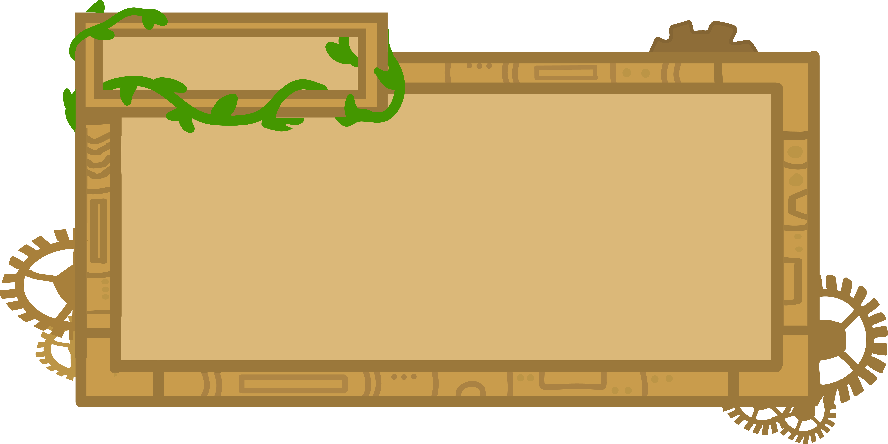
Planet Pesto
UI & Level Designer | June 2025 – July 2025
Created UI assets and co-designed platformer game levels for a Unity-based climate action game that placed 14th out of 34 entries in IndieCade's 2025 Climate Jam.
Game DesignUI DesignAdobe Illustrator
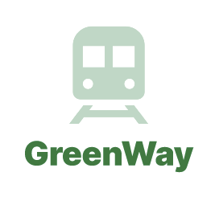
GreenWay
UX Researcher & Designer | February 2025 – March 2025
Designed a mobile app to solve Boston MBTA Green Line commuter pain points including delays, capacity issues, and navigation challenges through real-time updates and wayfinding.
UX ResearchMobile DesignFigma
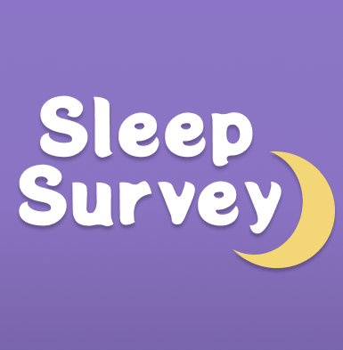
Sleep Survey
UX Researcher & Designer | March 2025 – April 2025
Researched sleep stressors and designed a dream documentation and analysis app to help users improve rest and wellbeing through sleep journaling.
UX ResearchMobile DesignFigma
Planet Pesto
UI & Level Designer | June 2025 – July 2025
Project Overview
Planet Pesto is a Unity-based platformer game developed for IndieCade's 2025 Climate Jam. I served as UI and Level Designer, creating visual assets and designing engaging game levels that communicate climate action themes through gameplay.
Achievement: 14th place out of 34 entries in IndieCade's 2025 Climate Jam competition
Gameplay & Level Design
The game features a charming steampunk-inspired aesthetic set in various environments, from lush forests to industrial interiors. Players navigate through platforming challenges while learning about climate action.
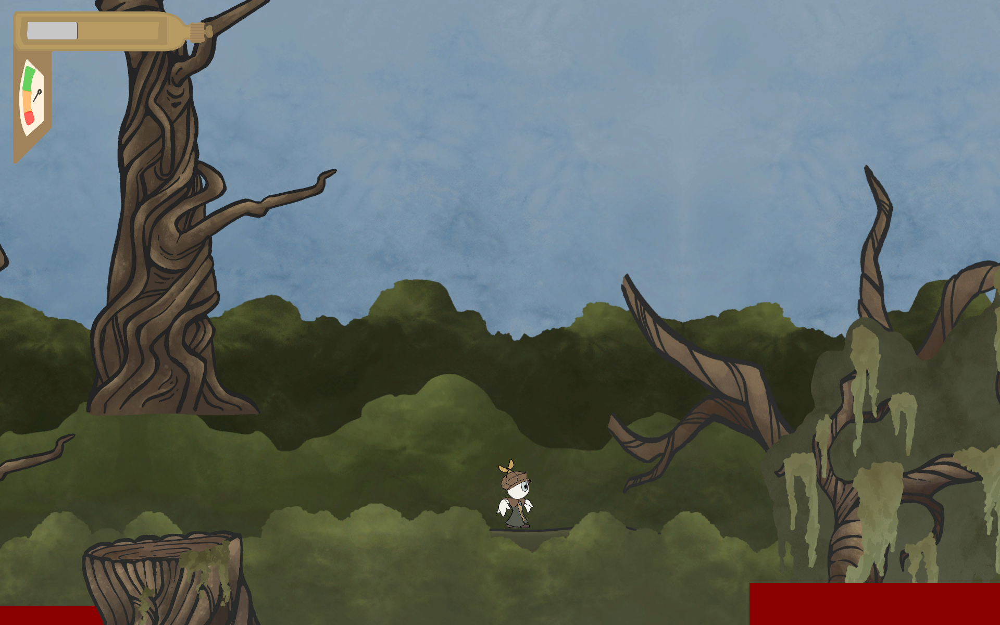
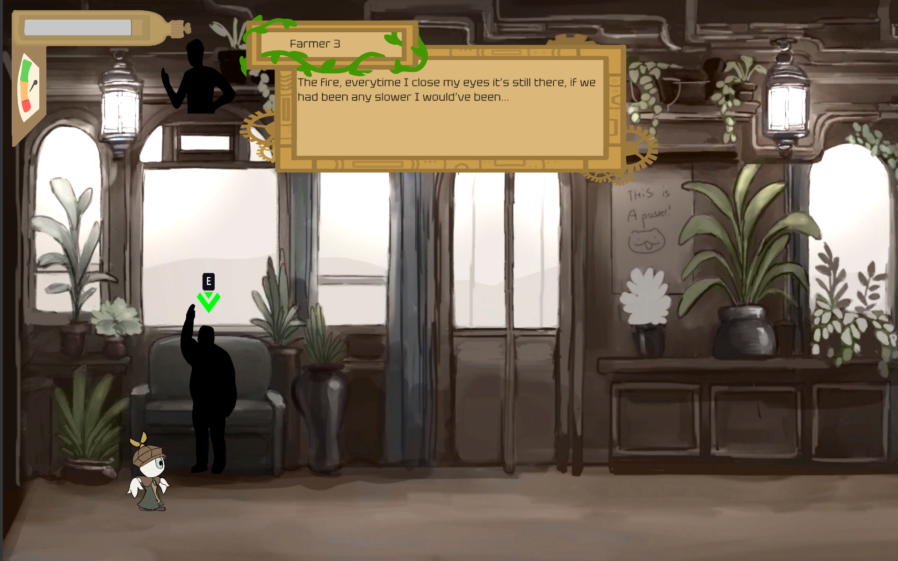
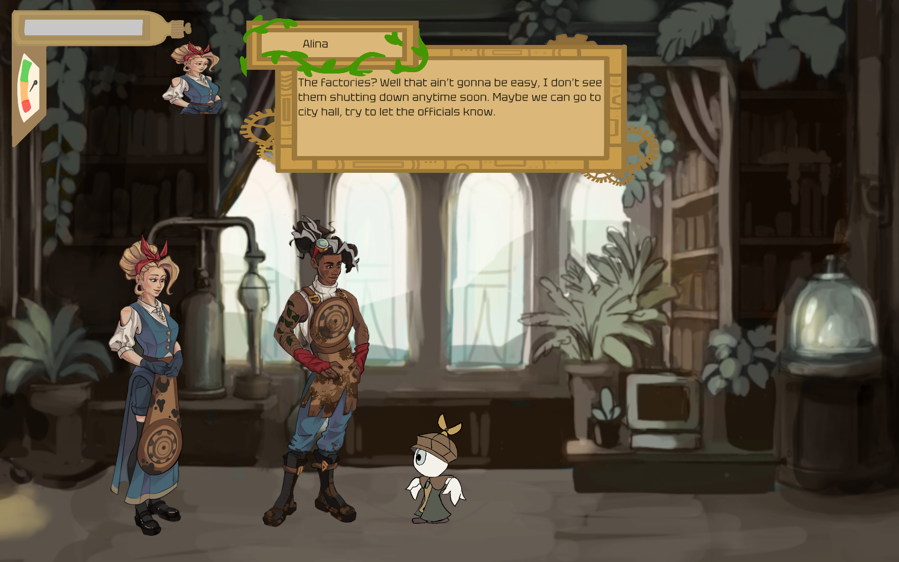
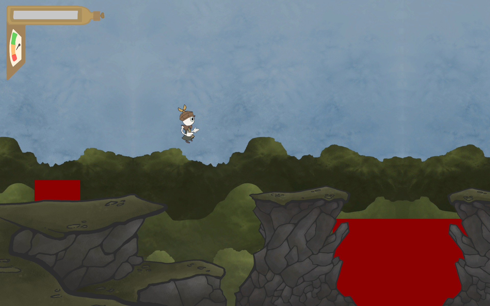
UI Design Process
The UI design went through extensive iteration, exploring different menu layouts, pause screen designs, and in-game UI elements. The steampunk aesthetic was chosen to complement the game's environmental themes while maintaining clear usability.
Steam Gauge UI Element
One of the key UI assets I designed was the steam gauge, which serves as a resource meter in the game. Multiple iterations explored different visual approaches, from circular gauges to horizontal bars, each maintaining the steampunk aesthetic.
Key Learnings
This project taught me the importance of iterative design in game development, the value of playtesting early and often, and how to balance artistic vision with usability constraints in an interactive medium. Leading weekly team meetings also strengthened my collaboration and communication skills.
GreenWay
UX Researcher & Designer | February 2025 – March 2025
The Problem
Boston's MBTA Green Line commuters face numerous challenges including frequent delays, inconsistent train capacity, and difficulty navigating complex station layouts and surrounding areas. These pain points create stress and uncertainty for daily riders.
Research
I conducted user research to identify key commuter pain points:
Unpredictable delays without clear communication
Inconsistent train capacity leading to overcrowding
Navigation challenges within stations and surrounding areas
Lack of real-time service updates
Difficulty planning alternative routes during disruptions
The Solution
GreenWay is a mobile app designed to improve the Green Line commuter experience through real-time service updates, train capacity indicators, and enhanced wayfinding features including AR navigation within stations.
Key Features: Real-time delay notifications, train capacity visualization, station wayfinding, and route planning
Key Screens
Design Process
The design evolved through three major iteration cycles, each incorporating peer feedback and collaborative problem-solving. Early wireframes focused on information hierarchy, while later iterations refined the visual design and interaction patterns to ensure critical information was immediately accessible during stressful commute situations.
Key Takeaways
This project reinforced the importance of designing for real-world constraints and user stress. Features needed to be immediately accessible and understandable, especially during high-pressure commute situations. The iterative process allowed us to refine the interface based on actual user needs rather than assumptions.
Sleep Survey
UX Researcher & Designer | March 2025 – April 2025
Team: Grace Chau, Kayla, Kaitlin, Amelie
The Problem
College students and young professionals (ages 18-25) face two interconnected challenges: lack of mental clarity upon waking up and the need for dream reflection in today's stressful environment. Stress and emotions cause irregular sleep patterns that affect dreaming and cause grogginess, making it difficult to start the day productively.
Target Users: College students and post-grads with irregular sleep patterns or high stress levels who want to understand how daily stressors affect their sleep
Interaction Scenario
A Northeastern student is exhausted from studying for finals and hasn't gotten much sleep recently. She wakes up from a nightmare and opens Sleep Survey as part of her morning routine. She logs her emotions upon waking up and writes briefly about her nightmare. The app prompts her with questions, and while answering them, she feels herself fully waking up. Satisfied with her log, she's now alert and ready to conquer her finals.
Research & Competitive Analysis
I analyzed existing dream apps to identify opportunities for innovation:
DreamApp: Uses algorithms and AI to analyze user input, provides dream symbol definitions
LucidScribe: Offers scientific tools for lucidity reactivation and dream incubation
Gap identified: No apps combined mental clarity enhancement with dream reflection specifically for stressed young adults
Morning Log: Rate sleep quality and emotions upon waking
Dream Categorization: Log dreams as one of five types (dream, nightmare, lucid dream, recurring dream, or no dream)
Interactive Questioning: Answer prompts about dreams to increase alertness and understanding
AI Analysis: Receive psychological insights and emotion tags (fear, uncertainty, relief, anxiety)
Stressor Tracking: Connect daily life events to dream content (e.g., bad test grade → nightmare about future)
Calendar Visualization: Color-coded monthly view to identify sleep patterns
The calming purple interface promotes relaxation while the structured prompts help users fully wake up and gain clarity.
User Flow
Dream Journaling Experience
Iteration Process
The design evolved through multiple iteration cycles with continuous team collaboration:
First Iteration: Basic login, sleep rating feature, calendar view, and initial AI integration
Final Iteration: Enhanced AI responses with empathetic tone, improved dream categorization system, refined calendar with better visual hierarchy, and more intuitive journal entry flow
User feedback revealed that the interactive questioning process successfully helped users wake up while the AI analysis provided meaningful insights into their emotional state.
Challenges & Learnings
Design Challenges:
Limited dream categories - no "other" option if user's dream doesn't fit the five provided types
Accessibility concern - heavy reliance on color coding rather than shapes/symbols makes it less colorblind-friendly
Balancing comprehensive features with simplicity for groggy morning users
Key Takeaways
Designing for wellness and mental health required careful consideration of tone, timing, and user emotional state. The project taught me that thoughtful micro-interactions - like the AI's empathetic responses - can significantly impact user comfort during vulnerable moments. Creating safe, non-judgmental digital spaces requires balancing functionality with emotional intelligence in every design decision.
Working in a collaborative team environment also reinforced the value of diverse perspectives in ideation and the importance of iterative feedback in refining user experience.
 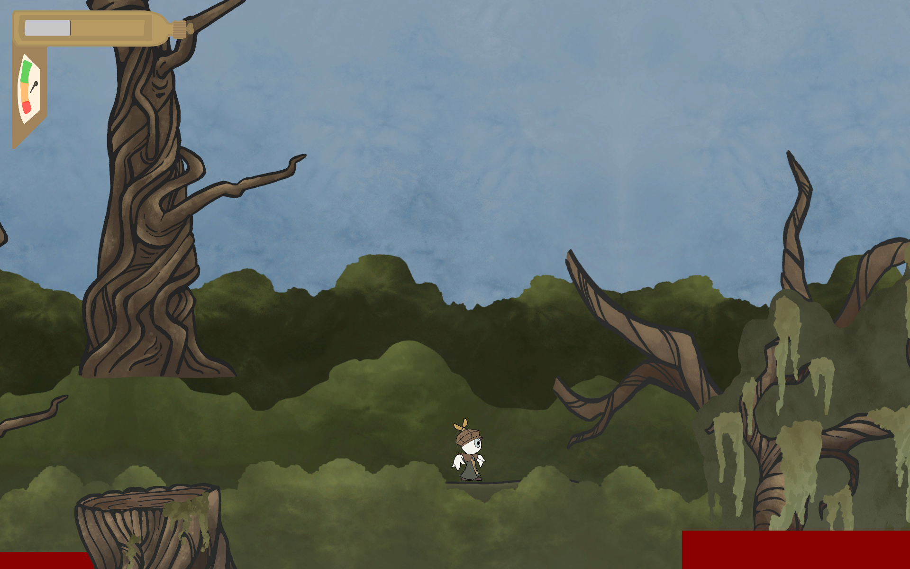
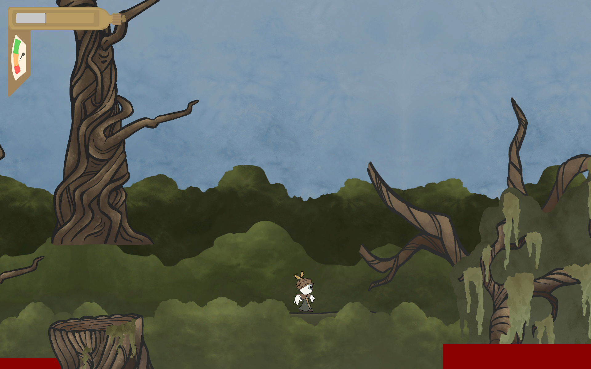
 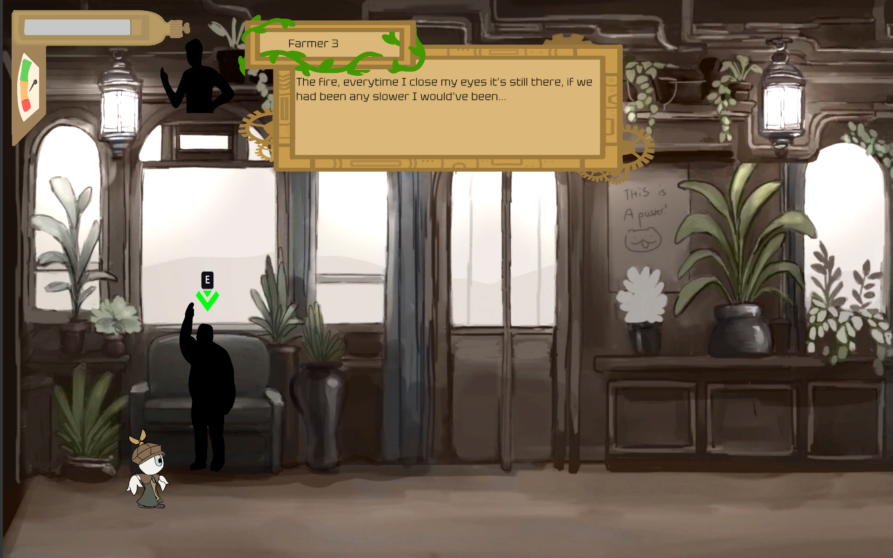
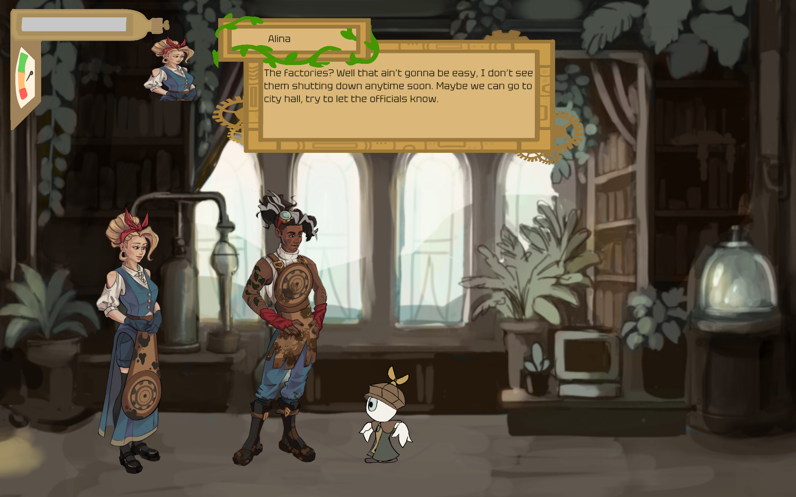
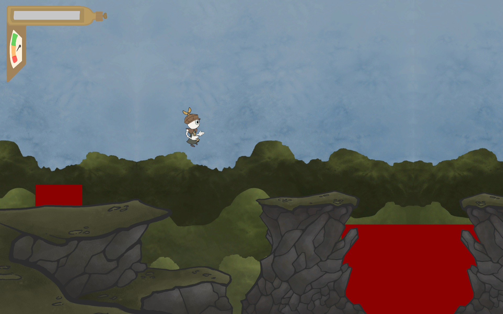
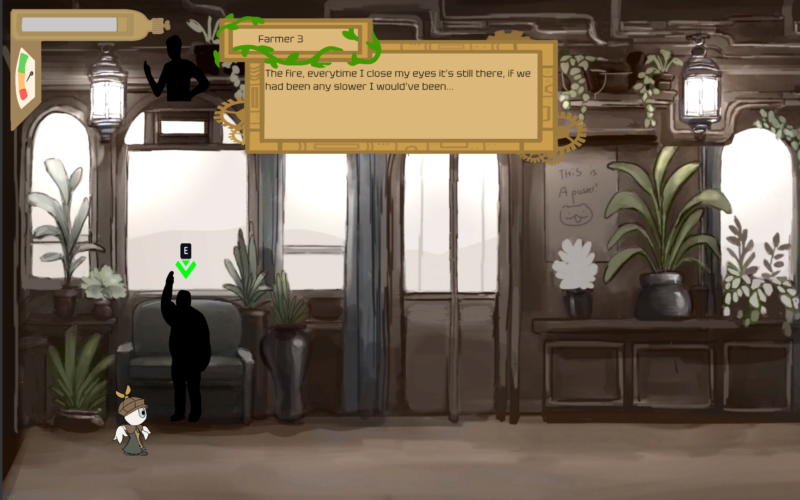
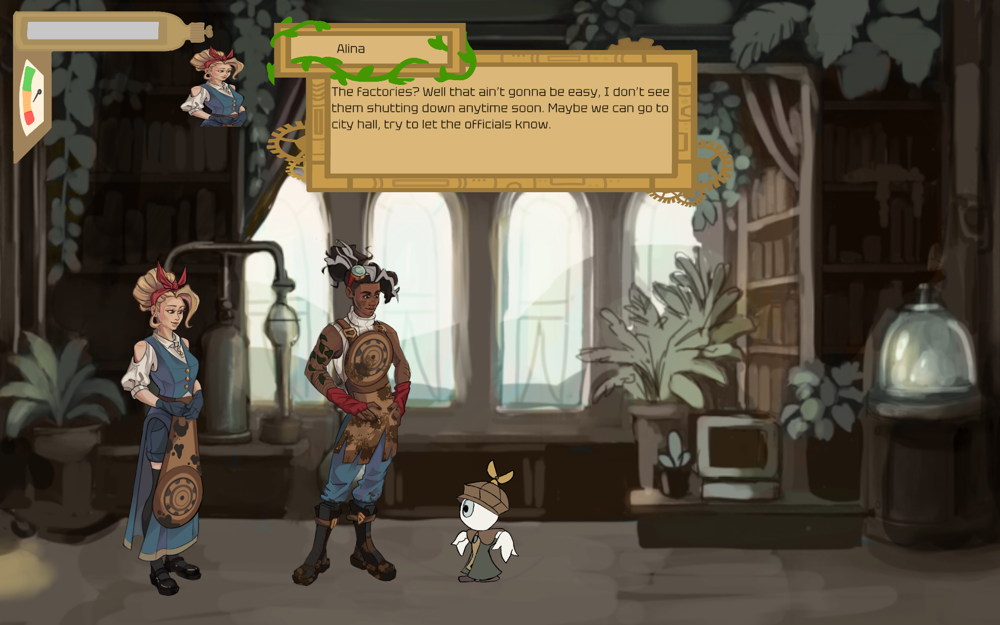
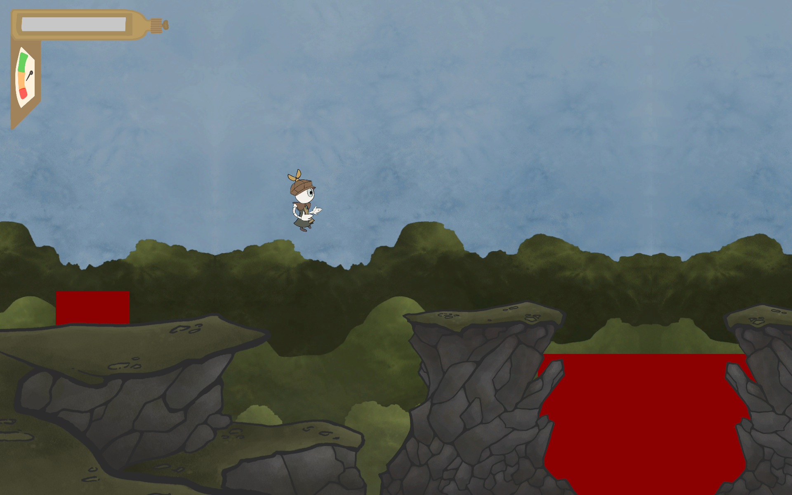